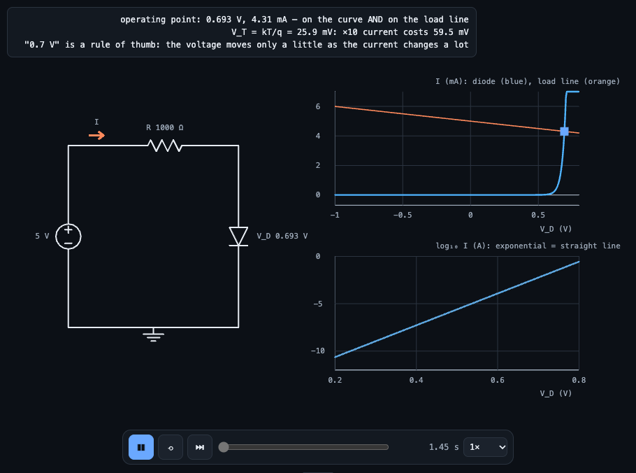
Analog electronics26 topicsTopics
1 · Diodes
The diodeRectifiersThe Zener regulator2 · Transistors
The bipolar transistorThe MOSFETTransconductanceThe bias pointSmall-signal modelCurrent mirror3 · Amplifiers
Common-emitter amplifierEmitter followerDifferential pairMiller effectNegative feedbackCascading stages4 · Op-amps
The ideal op-ampFinite open-loop gainBandwidth and slew rateOffset and bias currentStability and phase marginSallen-Key filter5 · CMOS logic
The CMOS inverterNoise marginsGate delayPowerThe latch: memory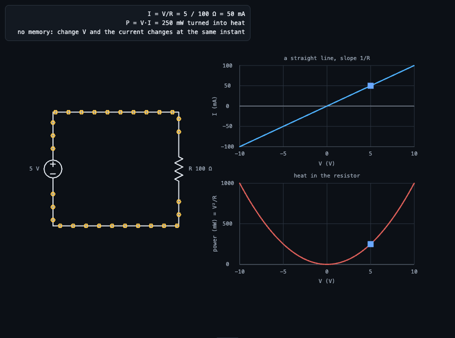
Circuits26 topicsTopics
1 · Components
Source and resistorThe capacitorThe inductorThe diodeParts under a sineLC energy exchange2 · Networks
Series and parallelKirchhoff’s current lawThévenin and maximum powerSuperpositionCircuits as a potential landscapeRLC step response3 · AC circuits
PhasorsRLC phasors in 3DImpedanceSeries resonanceParallel tankAC powerRC filters4 · Radio circuits
SelectivityLC ladderImpedance matchingTransmission lines and the Smith chartEnvelope detectorThe mixerFrom the feed to the antenna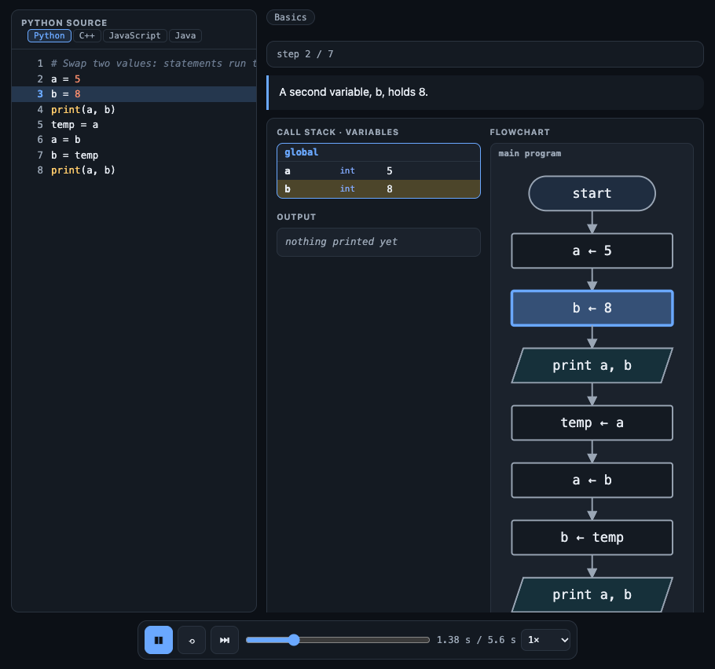
Coding15 topicsTopics
Basics
Sequence and variablesTypes and expressionsControl flow
Selection: if / elseMulti-way selection: else ifIteration: the counting loopIteration: the while loopNested loopsLoop control: break and continueData
Arrays and listsStringsDictionaries and mapsFunctions
FunctionsScope and parameter passingRecursionObjects
Classes and objects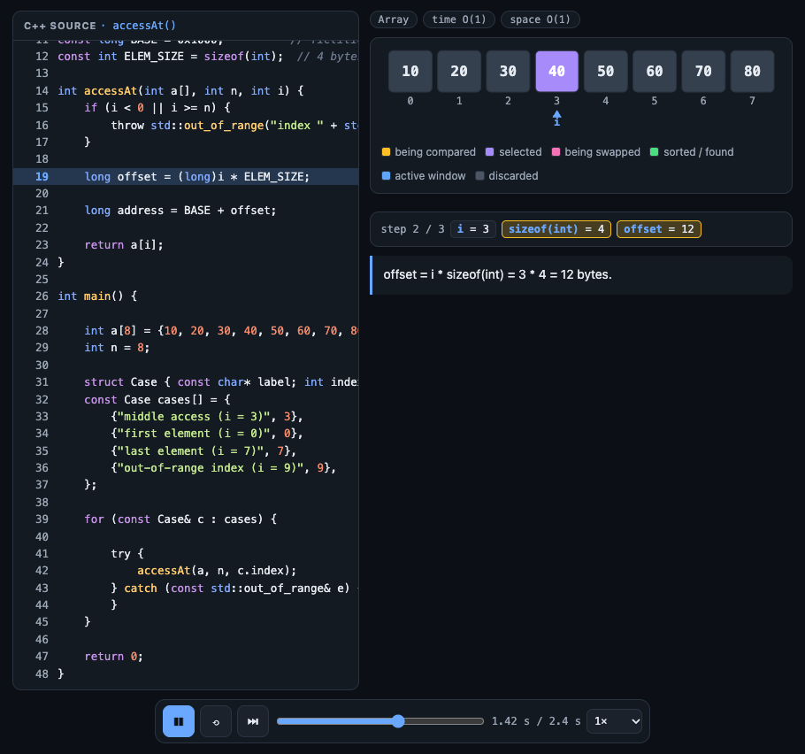
Computer science46 topicsTopics
Array
AccessingInsertDeleteLinear SearchBinary SearchSorting
Insertion SortSelection SortBubble SortMerge SortQuick SortOther
KadaneStack and Queue
StackCircular QueueLinked List
AccessingInsertDeleteSearchSingly / Doubly / CircularTree
N-ary TreeBreadth-FirstPre-orderIn-orderPost-orderBinary Search Tree
SearchInsertionDelete (3 cases)Heap
HeapifyInsertDeleteGraphs
Matrix and ListBreadth-First SearchDepth-First SearchShortest Paths
DijkstraFloyd-WarshallBellman-FordA*Flow and MST
Ford-FulkersonKruskalScheduling
First Come First ServedShortest Job FirstPriority SchedulingRound RobinComparing All FourSynchronization
Lock VariablePeterson's SolutionSemaphores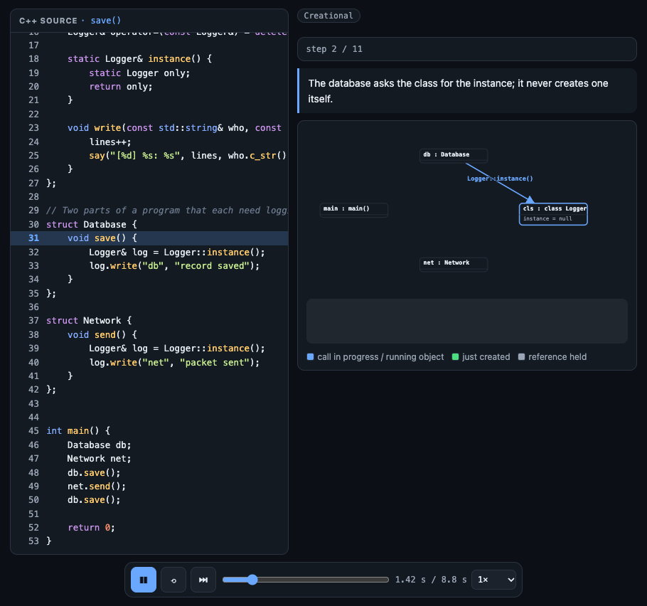
Design patterns13 topicsTopics
Creational
SingletonFactory MethodBuilderStructural
AdapterDecoratorCompositeProxyBehavioural
StrategyObserverCommandStateTemplate MethodChain of Responsibility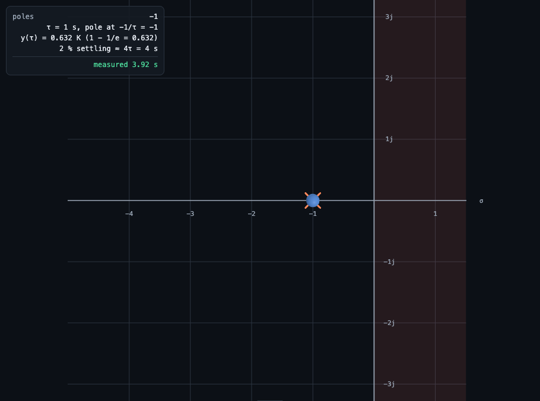
Control systems13 topicsTopics
1 · Time domain
Time responsePoles and stability2 · Feedback
Feedback and steady-state errorRoot locusPID control3 · Frequency domain
Bode diagramNyquist and stability marginsLead and lag compensation4 · State space
State space and eigenvaluesPole placementObservers and the Kalman filter5 · Digital control
Sampling and the z-planeA controller in a computer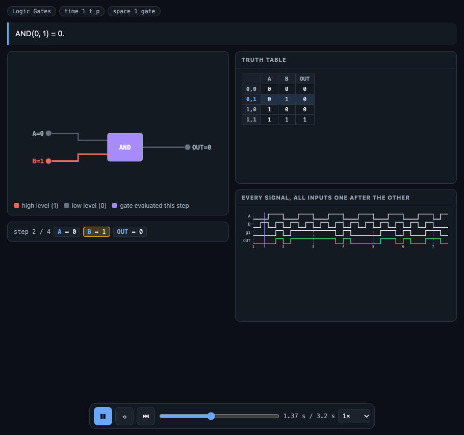
Digital electronics32 topicsTopics
Logic Gates
The Seven GatesGates Over TimeNAND Is UniversalTri-State BufferAdders
Half AdderFull AdderRipple-Carry, 4 bitRipple vs Carry-Look-Ahead1-Bit ComparatorParity GeneratorLatches
SR Latch (NOR)SR Over TimeD Latch with EnableTransparencyNOR vs NAND: DualityThe Glitch That SurvivesFlip-Flops
SR Flip-FlopD Master-SlaveLatch vs Flip-FlopJK Flip-FlopT as a Frequency DividerSetup and HoldMetastabilityCounters
Asynchronous Ripple CounterSynchronous CounterMod-N CounterRing and JohnsonGray CodeFSM
Moore vs Mealy'101' Sequence Detector (Moore)Same Input, Different OutputsTraffic Light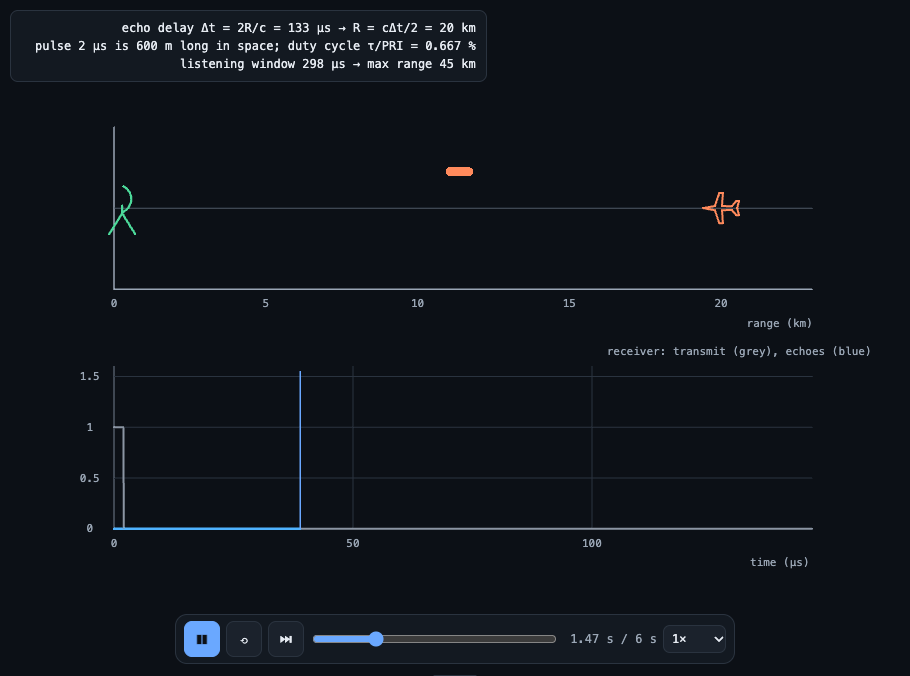
Electronic warfare35 topicsTopics
1 · Pulses and range
Pulse echo and rangeRange resolutionPulse trains and RTIPulses in flight2 · Radar basics
The radar equationDetection in noiseThe PPI scope3 · Waveforms
The plain pulseThe LFM chirpPhase codes4 · Doppler
The Doppler effectPulse-Doppler: range and velocityThe range–Doppler mapThe PRF dilemmaMoving-target indication5 · Antennas and beams
Phased-array beamformingMaxwell on a gridPointing a beamLobing and angle trackingSearching a volume6 · Airborne radar
Airborne engagementGround clutter7 · System architectures
Pulsed radar: the blocksCoherent pulse-Doppler radarAESA and T/R modulesESM receiverDRFM jammer8 · Receivers
Receiver architecturesIQ demodulation9 · Electronic attack
Jamming and burn-through10 · Emitter fingerprinting
What is an emitter fingerprintTransmitter imperfectionsWhat the receiver addsChannel and operating conditionsFingerprint workbench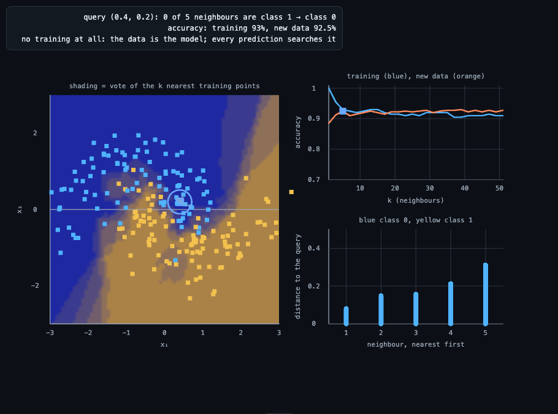
Machine learning11 topicsTopics
1 · Classic methods
Nearest neighbours and decision treesClustering and PCA2 · Linear models
Linear regressionLogistic regression3 · Margins and kernels
Support vector machinesThe kernel trick4 · Ensembles
Bagging and random forestsBoosting5 · Generalization
Overfitting and how to fight itClassification metricsROC curves and thresholds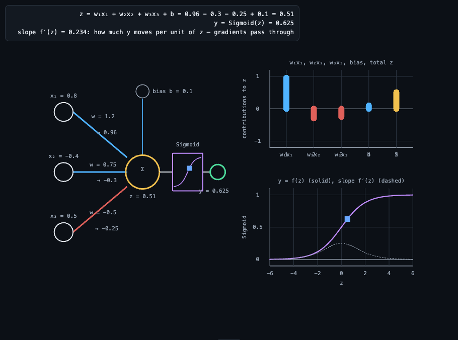
Deep learning22 topicsTopics
1 · The neuron
Inside a neuronLogic gates and the perceptronThe neuron2 · Networks
Hidden layersTraining a small networkDepth, width and learning rateUniversal approximation3 · Layers
Activation functionsDense layerConvolutional layerPooling layerSoftmax output layerPutting the layers together4 · Training
Loss functionsBackpropagation and mini-batchesOptimizersVanishing gradientsWeight initialisation5 · Real data: MNIST
Handwritten digits (MNIST)What the digit network learnedConvolution filters on digitsA CNN on handwritten digits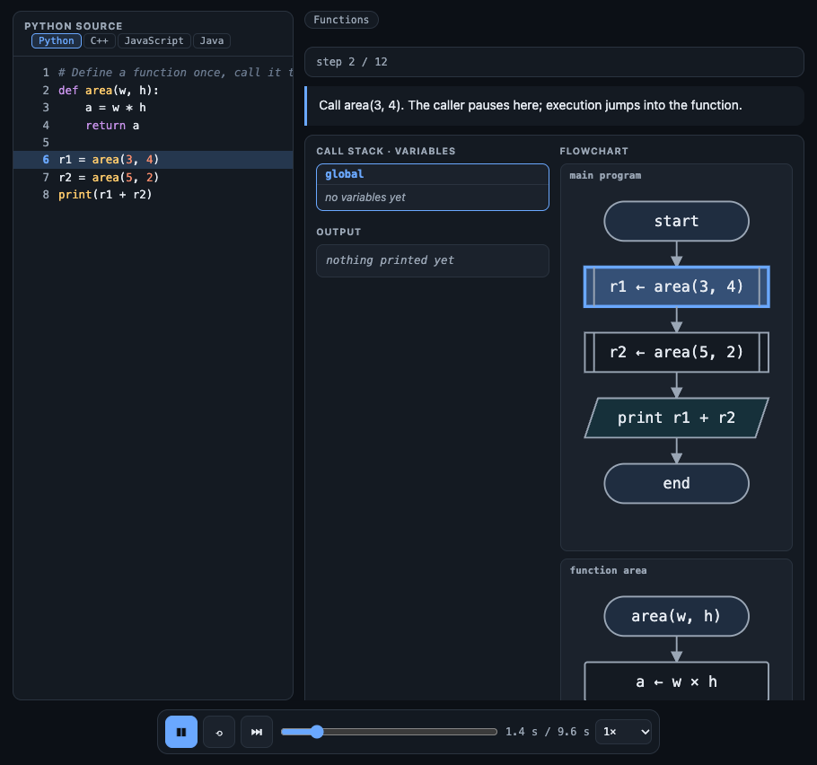
Maths29 topicsTopics
1 · Functions
FunctionsTransforming graphsComposition and inversesPolynomials and rational functions2 · Trigonometry
TrigonometrySolving trianglesParametric and polar curvesConic sections3 · Complex numbers
Complex numbersEuler’s formulaComplex functions4 · Calculus
Limits and continuityCalculusCurve sketchingNewton’s methodAreas and volumesSequences and seriesDifferential equations5 · Linear algebra
VectorsMatrices and linear mapsLinear systemsThe determinantEigenvalues and eigenvectorsLeast squares6 · Multivariable calculus
Functions of two variablesDivergence and curlDouble integralsConstrained optimisationLine integrals and work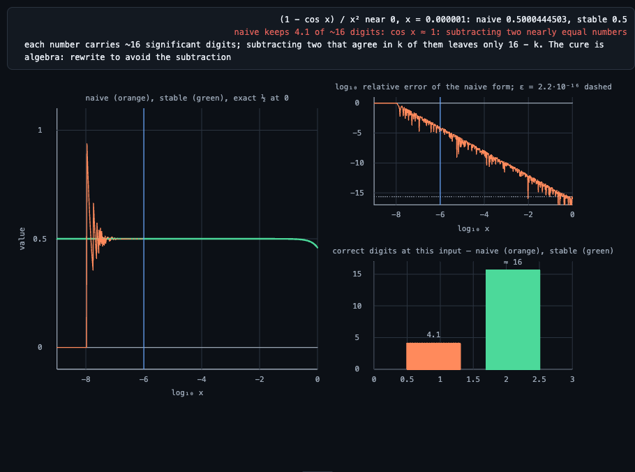
Numerical methods15 topicsTopics
1 · Numbers and error
Round-off and cancellation2 · Roots of equations
BisectionThe secant methodFixed-point iteration3 · Linear systems
Gaussian elimination and LUJacobi and Gauss–SeidelConditioning4 · Optimisation
Golden-section searchGradient descent and Newton5 · Differential equations
Euler, Heun and RK4Stability and stiffnessOrder of accuracy6 · Approximation
Interpolation and RungeNumerical integrationFinite differences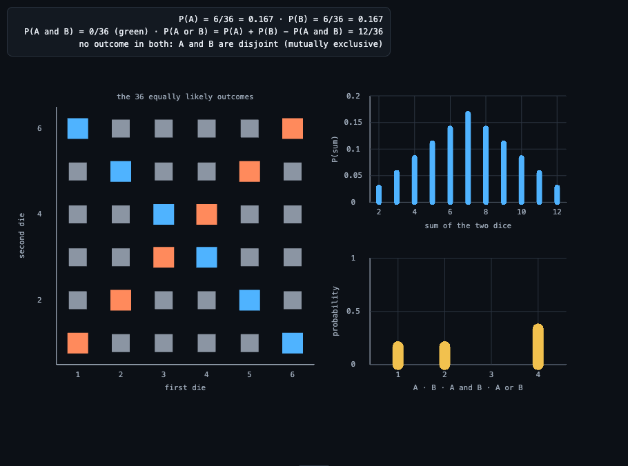
Probability and statistics34 topicsTopics
1 · Chance
Outcomes and eventsCountingConditional probabilityBayes’ theoremThe law of large numbers2 · Random variables
Expected value and varianceProbability distributionsThe normal curve and z-scoresTwo variables: joint, marginal, conditional3 · Sums and limits
The Galton boardSample means and the CLT4 · Describing data
Mean, median and spreadHistograms and box plotsCorrelationFitting a line: least squares5 · Estimation
Sampling distributionsConfidence intervalsThe bootstrapMaximum likelihood6 · Tests
Hypothesis testsz and t testsp-values, power and p-hackingChi-square goodness of fitChi-square test of independenceANOVARank tests (Mann–Whitney)7 · Models
Regression inferenceBayesian updating8 · Random processes
Random walksMarkov chains9 · Monte Carlo
Monte Carlo: areas and πHow fast Monte Carlo convergesBuffon’s needleImportance sampling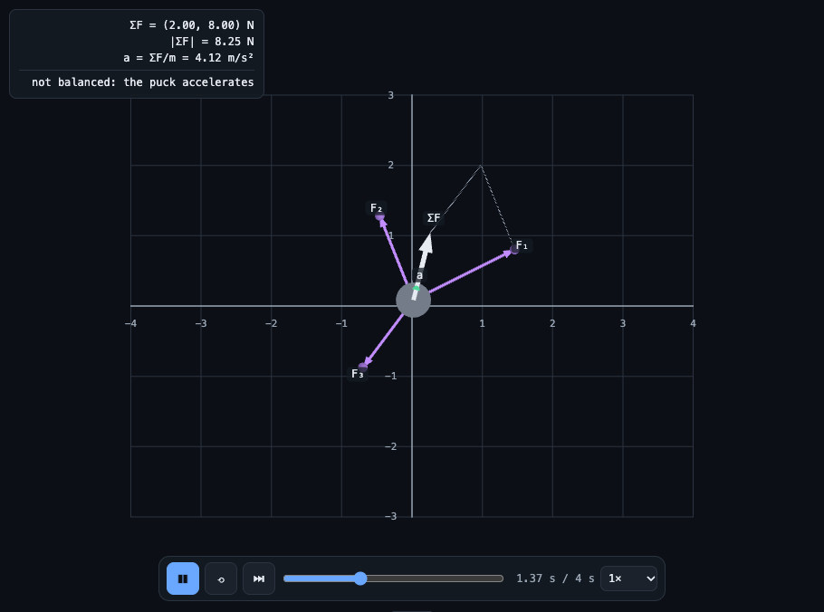
Physics44 topicsTopics
1 · Mechanics
Adding forcesNewton’s laws and frictionProjectile motionCircular motionWork and energyFriction turns energy into heatMomentum and collisionsTorqueRolling and moment of inertiaAngular momentumBuoyancy2 · Waves and oscillations
Simple harmonic motionDamped oscillationsDriven oscillations and resonanceThe pendulumCoupled oscillatorsNormal modes of a chainTravelling wavesSuperposition and beatsStanding wavesDoppler effect and shock waves3 · Heat
Kinetic theory of gasesIsothermal and adiabatic processesHeat engines and efficiencyEntropy and the T–S diagramHeat conduction4 · Electromagnetism
Field of a point chargeDipoles and charge pairsGauss’s lawMagnetic field of currentsNo magnetic charge: Gauss’s law for BAmpère’s lawCyclotron motionE×B driftMoving magnet and Lenz’s lawAC inductionDisplacement currentElectromagnetic waves5 · Optics
Refraction and total reflectionThin lensesCurved mirrorsInterferenceSingle-slit diffractionDiffraction gratings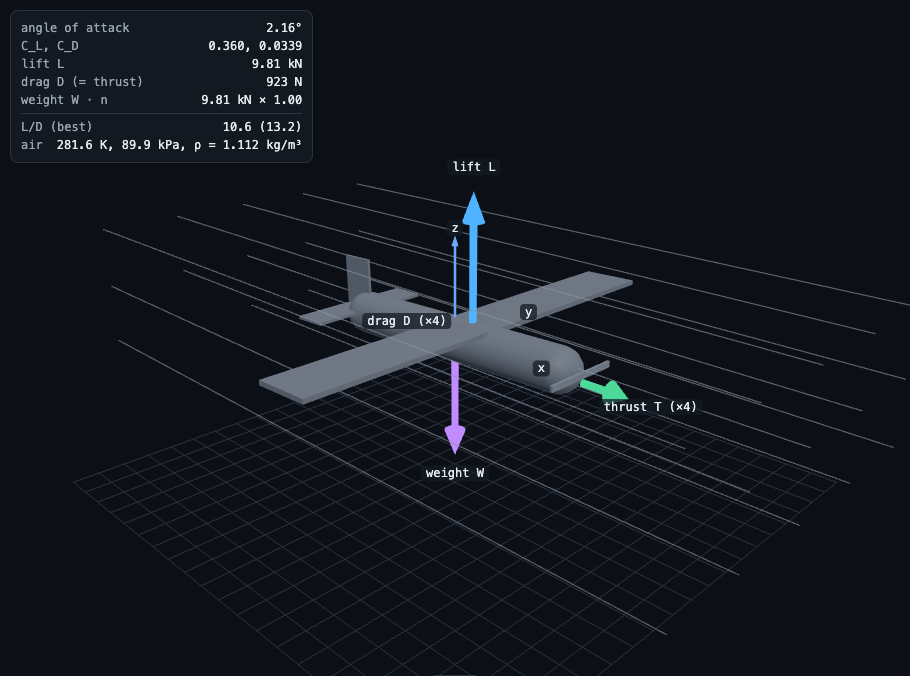
Flight and space28 topicsTopics
1 · Flight
Lift and dragHow an airfoil liftsThe standard atmosphereThe stallDrag polar and power curvesTurning flight and load factorGliding and the sink polarStatic stabilityTake-off and landingRange: the Breguet equation2 · Orbits
Gravitational fieldNewton’s cannon and escape speedKepler orbitsKepler’s first and second lawsKepler’s third lawInclination and ground tracksEarth’s bulge (J2)Orbital transfersHohmann against bi-ellipticPlane changesRendezvousLagrange pointsGravity assistEscape to the planets3 · Rockets
The rocket equationStagingLaunch: gravity turn and lossesAtmospheric entry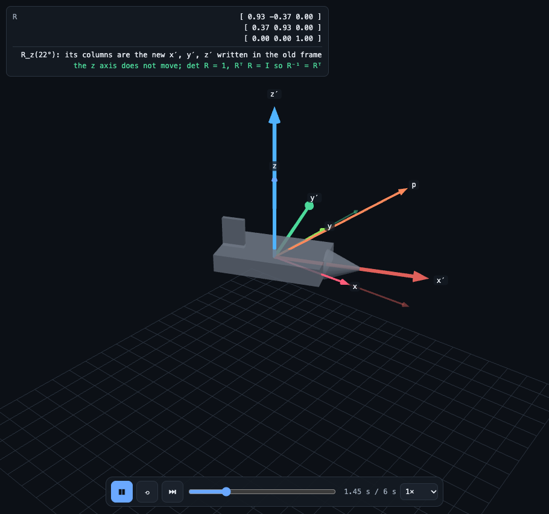
Robotics19 topicsTopics
1 · Rotations and frames
Rotation matricesComposing rotationsEuler angles and roll–pitch–yawAxis–angle and quaternionsHomogeneous transforms2 · Kinematics
A planar armDenavit–Hartenberg conventionA 7-joint arm: Kinova Jaco2Inverse kinematics3 · Differential kinematics
The Jacobian and singularitiesStatics: τ = Jᵀ FClosed-loop inverse kinematicsRedundancy and the null space4 · Trajectories
Trapezoidal velocity profileCubic and quintic trajectories5 · Dynamics and control
Robot dynamicsPD control with gravity compensationComputed torqueImpedance control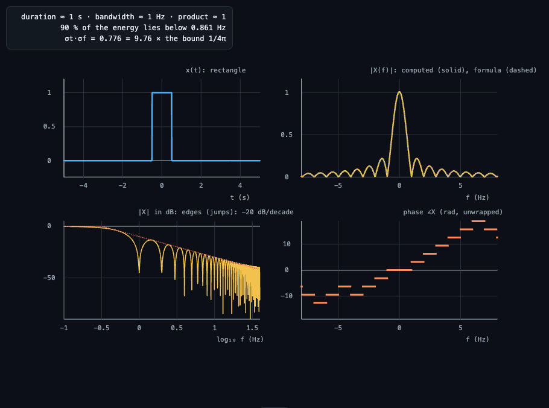
Signal theory53 topicsTopics
1 · Signals
Pulses and their spectraThe chirpTime–bandwidth product2 · Fourier
Fourier seriesThe Gibbs phenomenonFrom series to transformLeakage and windows3 · DFT and FFT
The transform as correlationWinding around a circleDFT vs continuous transformWhy the FFT is fast4 · Sampling
Sampling a toneAliasingSpectral replicas5 · Systems
ConvolutionThe convolution theoremLinearity and time invarianceThe impulse responsePoles and the time responseFrequency response6 · Filtering
Filtering in time and frequencyFIR filter design7 · Spectral analysis
Reading FFT binsShifting and resamplingAmplitude, phase, frequencyFrequency estimationPlateau detection8 · Communications
Why a carrierAmplitude modulationFrequency and phase modulationAM, FM and PM compared9 · Digital communications
BPSK and QPSKM-QAMBit error rateEye diagramThe Shannon limit10 · Receivers
IQ demodulationResidual Δf and DFT bins11 · Antennas and propagation
Links and propagationYagi and patch antennasVivaldi antennaDipole: current and fieldsDipole: radiation patternDipole: impedance and directivityNear and far fieldPhased array: steeringPhased array: beams and lobesPhased array: tapers and nullsPolarizationJones and StokesTransmission linesWaveguidesDielectric guides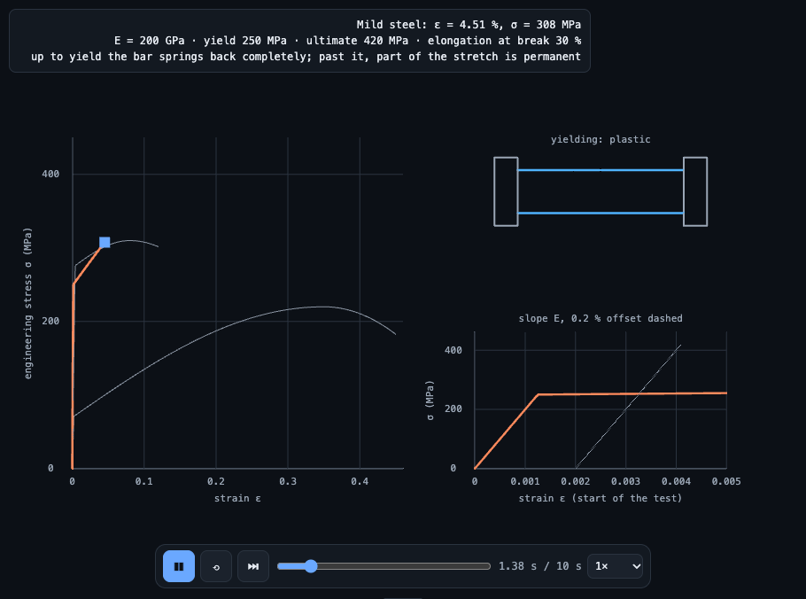
Structural mechanics10 topicsTopics
1 · Materials
The tensile testMohr’s circleStress concentration and fatigue2 · Beams
Simply supported beamCantileverCross sectionsA statically indeterminate beam3 · Shafts and trusses
Torsion of shaftsTrusses: the method of joints4 · Stability
Buckling of columns